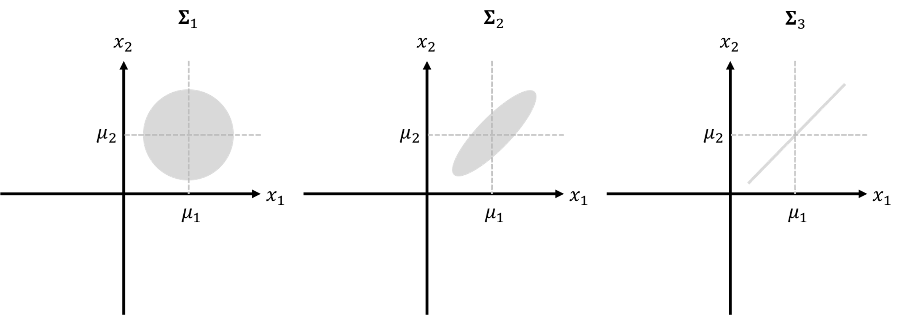

A distribution model characterizes the random behavior of a random variable. A random variable takes value from a predefined set, range, or a continuum, but not all values are taken with equal probabilities. How these probabilities are distributed is characterized by the distribution model. Before the computer age, for a distribution model to acquire a status of natural law it usually has an elegant geometric shape that comes with a delicate mathematical form, as many examples shown in Figure 4. As we have computers now doing a lot of computation, a distribution could be just an empirical histogram that has not yet found its explicit mathematical form. Whether or not this empirical form of distribution would repeat itself as a natural law remains to be seen. In practice, a competitive edge could be gained before you find scientific explanation, as long as it works.
In this book we will not have extensive coverage of distribution models. We will focus on normal distribution; but other than that, everything we learn about the normal distribution is also to help us extend beyond it and establish the concept of distribution as an abstract one.
A random variable \(x\) distributed as a normal distribution is denoted as
\[ x \sim N\left(\mu, \sigma^{2}\right). \]
The normal distribution has the mathematical form
\[ N\left(\mu, \sigma^{2}\right) = \frac{1}{\sqrt{2\pi} \sigma}e^{-\frac{1}{2}(\frac{x - \mu}{\sigma})^2 }. \]
If we multiply \(x\) with a constant \(a\), then
\[ ax \sim N\left(a\mu, a^2\sigma^{2}\right). \tag{103} \]
Extending the concept of distribution to \(p\)-dimensional space, we have the multivariate normal distribution (MVN) of vector \(\boldsymbol{x}\)
\[ \boldsymbol{x} \sim MVN\left(\boldsymbol{\mu}, \boldsymbol{\Sigma}\right), \]
where
\[ \boldsymbol{\mu}=\left[ \begin{array}{c}{\mu_{1}} \\ {\mu_{2}} \\ {\vdots} \\ {\mu_{p}}\end{array}\right], \text { } \boldsymbol{\Sigma}=\left[ \begin{array}{cccc} {\sigma^2_{1}} & {\sigma_{12}} & {\cdots} & {\sigma_{1p}} \\ {\sigma_{21}} & {\sigma^2_{2}} & {\cdots} & {\sigma_{2p}} \\ {\vdots} & {\vdots} & {\vdots} & {\vdots} \\ {\sigma_{p1}} & {\sigma_{p2}} & {\cdots} & {\sigma^2_{p }}\end{array}\right], \]
and
\[ MVN\left(\boldsymbol{\mu}, \boldsymbol{\Sigma}\right) = \frac{1}{\sqrt{(2\pi)^p\det{\boldsymbol{\Sigma}}}}\exp\left({-\frac{1}{2}(\boldsymbol{x}-\boldsymbol{\mu})^T\boldsymbol{\Sigma}^{-1}}(\boldsymbol{x}-\boldsymbol{\mu})\right). \]
To interpret the covariance matrix \(\boldsymbol{\Sigma}\), let’s look at an example where \(p=2\). Its covariance matrix is
\[ \boldsymbol{\Sigma_1} = \left[ \begin{array}{cc} {\sigma^2_1} & {\sigma_{12}} \\ {\sigma_{21}} & {\sigma_2^2}\end{array}\right]. \]
The element \(\sigma^2_1\) is the marginal variance of variable \(x_1\), \(\sigma^2_2\) is the marginal variance of variable \(x_2\), and \(\sigma_{12}\) that equals to \(\sigma_{21}\) is the covariance between \(x_1\) and \(x_2\).282 Covariance is closely related to the concept of correlation. For instance, denote the correlation between \(x_1\) and \(x_2\) as \(r\), which is defined as \(r = \frac{\sigma_{12}}{\sigma_1\sigma_2}\). It could be shown that \(r\) takes value from \(-1\) (i.e., perfect negative correlation) to \(1\) (i.e., perfect positive correlation). Note that this correlation concept is built on the normal distribution, and the correlation \(0\) doesn’t imply the two variables have no relationship in any possible form. Rather, it only implies that there is no linear relationship between the two.
Three examples of the covariance matrix are shown below
\[ \boldsymbol{\Sigma_1} = \left[ \begin{array}{cc} {1} & {0} \\ {0} & {1}\end{array}\right], \text { } \boldsymbol{\Sigma_2} = \left[ \begin{array}{cc} {1} & {0.8} \\ {0.8} & {1}\end{array}\right], \text { } \boldsymbol{\Sigma_3} = \left[ \begin{array}{cc} {1} & {1} \\ {1} & {1}\end{array}\right]. \]
The corresponding contour plots of the three bivariate normal distributions are shown in Figure 196.
If we add \(\boldsymbol{x}\) (i.e., \(\boldsymbol{x} \in R^{p \times 1}\)) with a constant vector \(\boldsymbol{a}\) (i.e., \(\boldsymbol{a} \in R^{p \times 1}\)), then
Figure 196: The contour plots of the three bivariate normal distributions
\[ \boldsymbol{a + x} \sim MVN\left(\boldsymbol{a + \mu}, \boldsymbol{\Sigma}\right). \]
If we multiply \(\boldsymbol{x}\) (i.e., \(\boldsymbol{x} \in R^{p \times 1}\)) with a constant \(\boldsymbol{a}\) (i.e., \(\boldsymbol{a} \in R^{p \times 1}\)), then
\[ \boldsymbol{a^Tx} \sim MVN\left(\boldsymbol{a^T\mu}, \boldsymbol{a^T\Sigma a}\right). \]